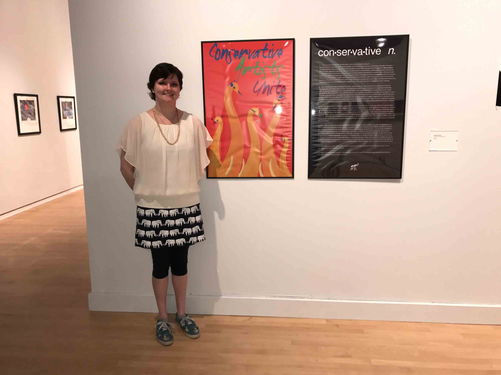
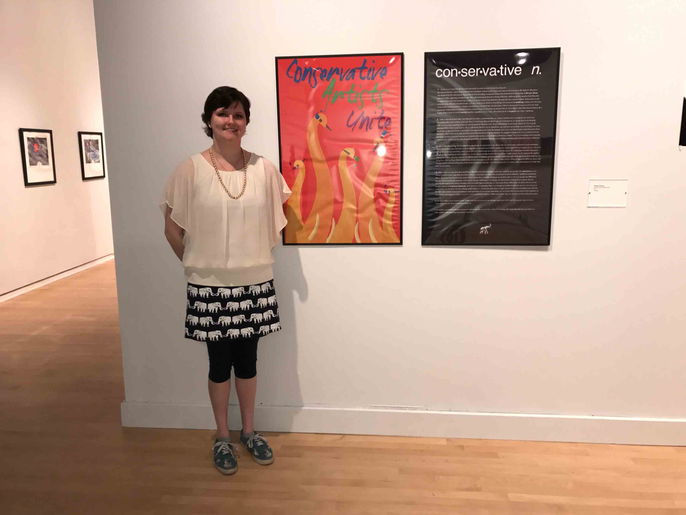

"Conservative Artists Unite" Diptych
This piece was created for the Spring 2017 Senior Exhibition at University of Maryland, Baltimore County.
(Scroll down to read my artist's statement.)
This piece was created for the Spring 2017 Senior Exhibition at University of Maryland, Baltimore County.
(Scroll down to read my artist's statement.)
 

Here is my artist's statement, which is displayed in the right panel of the diptych:
1. (I ask you to read this down to the last word, in order to understand my diptych).
A respectful definition for liberals: according to the first amendment, I have just as much right as anyone else to speak my mind. Me being who I am should not affect you in any way. What I am saying with this piece is not offensive toward anyone. It is not meant to be divisive. If anything, it is meant to be unifying. ● There are not many conservative artists out there. I simply want them to know that they are not alone. I don’t want us to feel supressed by the high popularity of liberalism. We should feel just as free to express ourselves as anyone else. ● I don’t believe that liberalism is bad at all. I simply believe that we can all coexist together regardless of our views. All we have to do is respect each other’s opinions.
2. I fully understand that what I am doing here is risky, considering that my name is out here for everyone to see. But if you are reading this and you know who I am, then I would hope that you think I am not a bad person. ● I do my best to be friendly with everyone that I speak to. If you say something that I disagree with, then I will politely let you know. However, if you talk trash about conservatives, then I will not be the first one to step down. You can hate me for that. You can despise me. But I would like to ask you to keep in mind that I am approaching this from the bottom of my heart. ● I don’t wish to hide this part of me anymore. I don’t want artists like myself to feel indirectly silenced by the thought of a negative response (or even retaliation) from our peers. ● Many of us are creating our artwork with caution, in fear of being labeled as a “bigot” if we do something even remotely controversial. We live our lives dreading the possibility of someone hating us for creating something that might be seen as offensive.
3. Yes, I will acknowledge the fact that there are plenty of conservatives out there who are much more outspoken (and sometimes even violent) than I am. But there is an analogy that I recently heard which explains the violence perfectly; ● Imagine if you stub your toe on the corner of something, what would you do? I think most of us would probably swear. But what if you weren’t allowed to swear, or say anything for that matter? We would then probably want to hit something. Maybe pound our fist against the wall to release our anger. What does this mean? Silence leads to violence. ● If more people could feel comfortable speaking their mind as I am doing here, then perhaps there would be less tension between us. All I am asking is that you be willing to approach different ideas with an open mind. I am not asking this of any particular group of people. I am asking everyone, no matter what your stance is, to take this into consideration.
4. What I want is to see more than anything is the different political groups unite once again as one people: the American people. I know it will be hard. Especially now that we have a Commander in Chief who is unafraid to tweet whatever pops into his head, no matter how harsh it may be. ● But I think this is just the challenge we need in order to see if we can learn to live together and disregard our political opinions. ● Of course, we may still disagree on things. We can be free to debate if we want to. But we should still respect each other’s thoughts and remember that even though we view some things differently, we likely share an even greater amount of common interests. ● For example, I enjoy going to Starbucks. My favorite concoction is the mocha frappuccino. I also love music. Rock, jazz, you name it. And anyone who knows me knows that I love comic books and watching superhero movies, especially ones with Superman (although Batman is pretty cool too, I admit). ● Whether or not you share those same interests with me, I hope you understand what I am getting at. We just have to remember that even though our political opinions may be very strong on some issues, we shouldn’t let those things solely define us. Instead, let your sense of style and personal interests define you. Let your favorite music, food, or even your dreams and aspiritions be the things that define you. ● I know that we can learn to live together as one country. All it takes is a little r-e-s-p-e-c-t. If we can learn to put our differences aside, then we can learn to love each other again.
To all of my fellow conservative artists; fulfill your life and pursue your dreams. And most of all, don’t let anyone stop you from expressing yourself. Keep your trunks raised. ♥